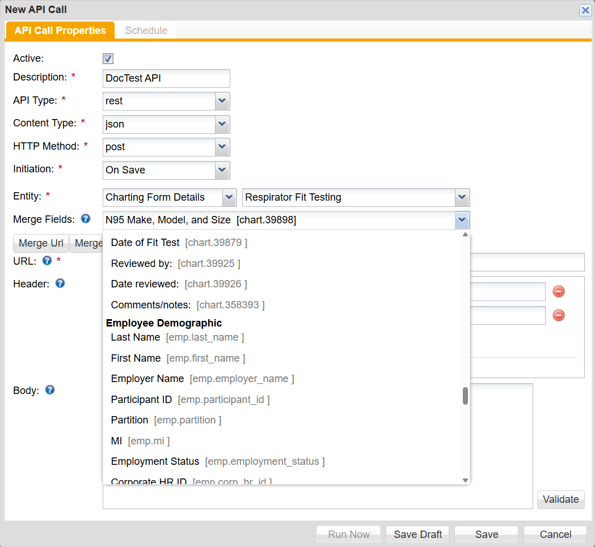
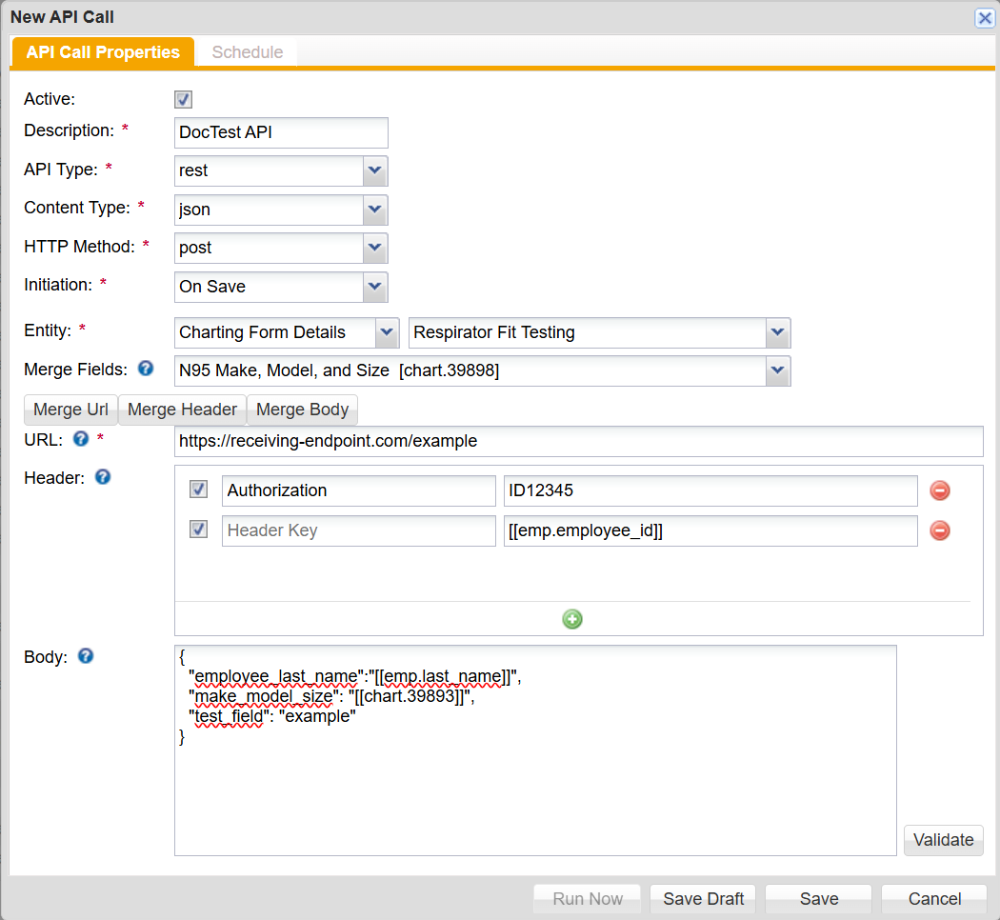
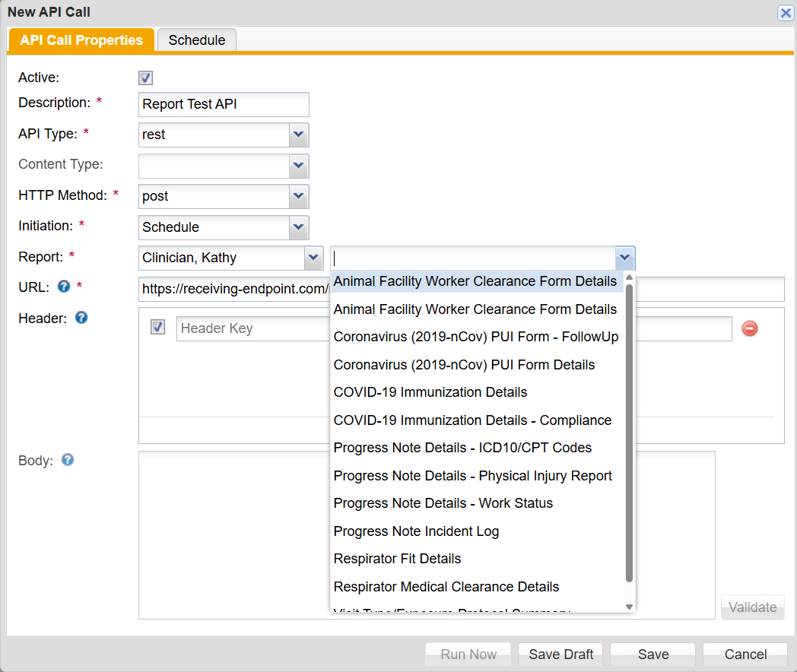
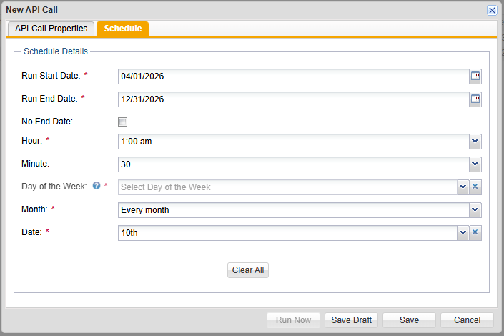

ReadySet APIs can be configured to connect and send information from ReadySet to an external destination.
To use APIs, the API Configuration option must be enabled in the Menu Configuration and users must have the API user role assigned to them.
Please reach out to the support team to enable API configurations for your ReadySet environment.
API calls can be configured from the Configuration menu on the APIs tab. To create a new API call:
When configuring a new API call, you can set the initiation, which determines when the API call is triggered. There are three initiation types.
When On Save is selected, you can choose an entity that, when saved, will trigger the API call. For example, you can set the Entity to Charting Form Details, choose a Charting Form from the list, and anytime a participant saves a form of the specified type, the API call will trigger.
To choose an entity, first choose Charting Form Details, Survey, or Employee Demographic from the drop-down list, and then choose the specific form, survey, of demographic data field.

After selecting an entity, you can choose values from its fields or demographic fields to be merged into the URL, headers, or body.

A single API call can only reference one entity at a time, for example a charting form or survey. If the entity is changed in the API call, the values of the existing merged fields will be null.
When Schedule is selected, you can send report data using an API call, rather than manually downloading and sending it when needed. The report is sent as .CSV file.
You can choose a report creator from the drop-down then select the report. The available reports are those in the creator's 'My Reports' folder.

After selecting a report, you can configure the interval at which the API call will run. On the Schedule tab, you can configure the following:

When Run Now is selected, the API call will trigger once configured and saved.